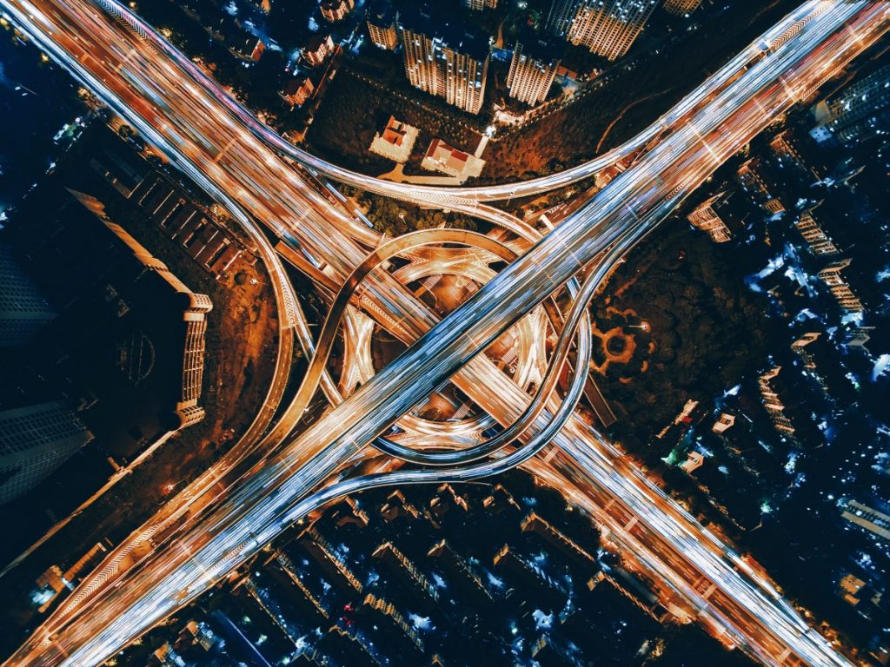
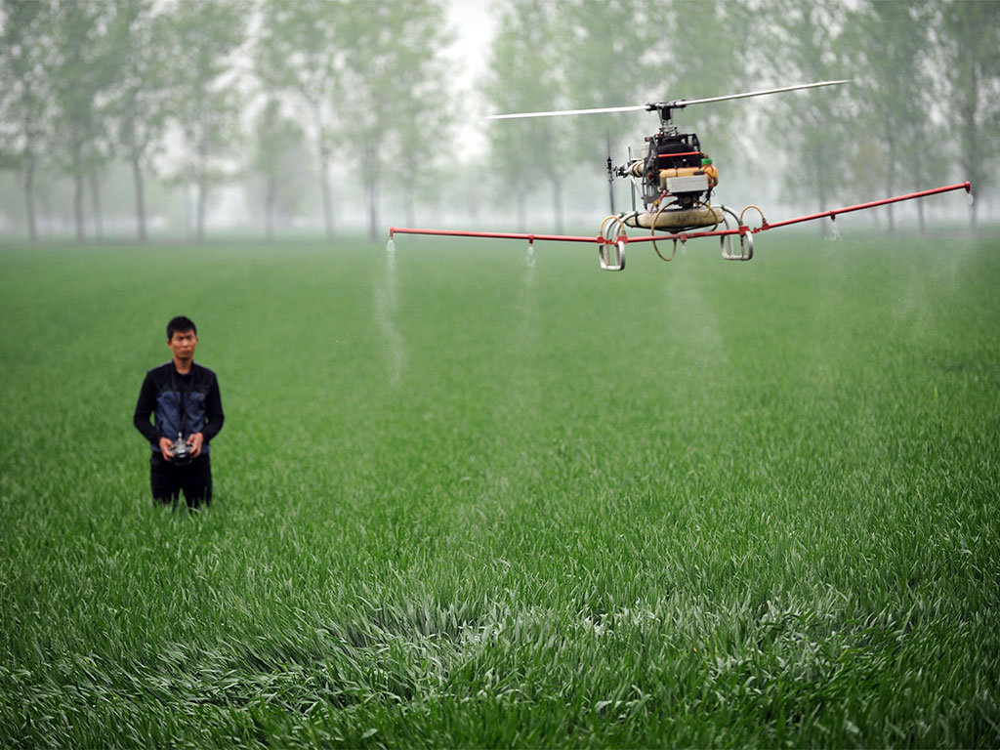

A drone, in technological terms, is an unmanned aircraft. Drones are more formally known as unmanned aerial vehicles (UAVs) or unmanned aircraft systems (UASes).
UAVs are most often associated with the military, where they are used initially for anti-aircraft target practice, intelligence gathering and then, more controversially, as weapons platforms.

A drone is a flying robot that can be remotely controlled or fly autonomously through software-controlled flight plans in their embedded systems, working in conjunction with onboard sensors and GPS.
Pros and Cons Table
| Configuration | Pros | Cons | Typical Uses | Price($AUD) |
|---|---|---|---|---|
| Multi-Rotor |
|
|
Aerial Photography and Video Aerial Inspection | $5k-$65k for pro drones |
| Fixed-Wing |
|
|
Aerial Mapping, Pipeline and Power line inspection | $25-$120k for pro drones |
| Single Rotor |
|
|
Aerial LIDAR laser scanning | $25-$300k for pro drones |
| Fixed-Wing Hybrid VTOL |
|
|
Drone Delivery | TBD, in development |
Please click here for more information about the TABLE
Defense
As the inception of drones started with its use in defense, it is the most important area even today where drones are used. But, the technology has evolved much more. Now smaller and portable drones are being used by ground forces on a regular basis. Drones in the military are used mostly for surveillance and offensive operations. Drone like Prox Dynamics is quite famous for military use around the world, including the US Marines, the British Army, the Australian Army, and Norway’s Armed Forces for exploration.
Urban Planning
As urbanization is growing up with the fast pace and with the emergence of smart cities concept all around the world, it is very important to map and survey the land which has to be developed. In this, drones have a great role to play. They can provide instant mapping and ready to use data for the purpose. Drones are also light on the budget side which can help city planners to decide which areas may benefit most from green space, without causing further congestion.

Healtcare
With increasing number of life-threatening diseases, modern medicine is the need of the time to increase the life expectancy and save lives. However, the availability is easy in urban areas, the reach of the modern medical facility is still yet time taking in rural areas. Here drones can play an important role by delivering quick access to drugs, blood, and medical technology in remote areas. Companies like Zipline International have especially designed drones to deliver medical services in rural areas throughout in countries like Africa and other remote parts of the world.
Agriculture
Good agriculture productivity is the backbone of many countries around the world. So, it is very important to monitor their health to expand yields. Drones in agriculture can help farmers to gather data and automate redundant processes to maximize efficiency. They can also be used for spray medicines to kill insects impacting their health. In a process of planting crops which is tedious and equally energy-intensive, drones can ease the work by distributing seed on the land. In past drones have also been used to pollinate flowers, and in future, could prove helpful in compensating for the declining bee population.